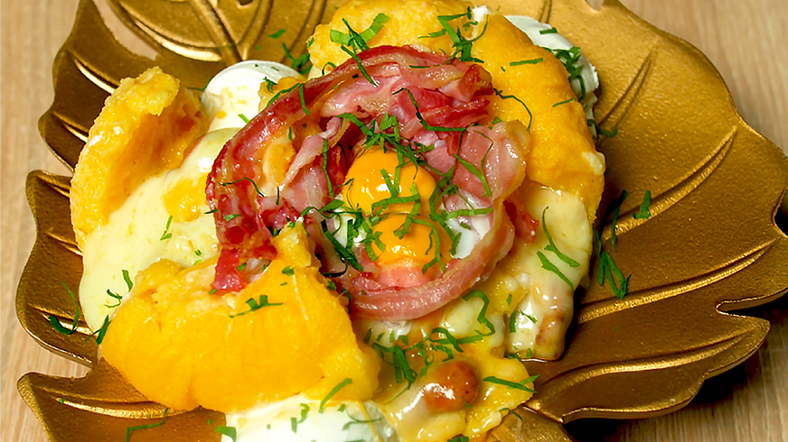

Bulz is a traditional Romanian dish created with cooked polenta that is shaped into balls and filled with a creamy stuffing. Subsequently, polenta balls are grilled, pan-fried, or baked until a crunchy, slightly charred crust forms on the outside. The most common filling is the combination of butter and soft sheep's cheese known as brânză de burduf. Chunks of bacon or ham are often incorporated into the filling to create a more balanced meal.
Meal prep time : 45 minutes
Servings : 3-4